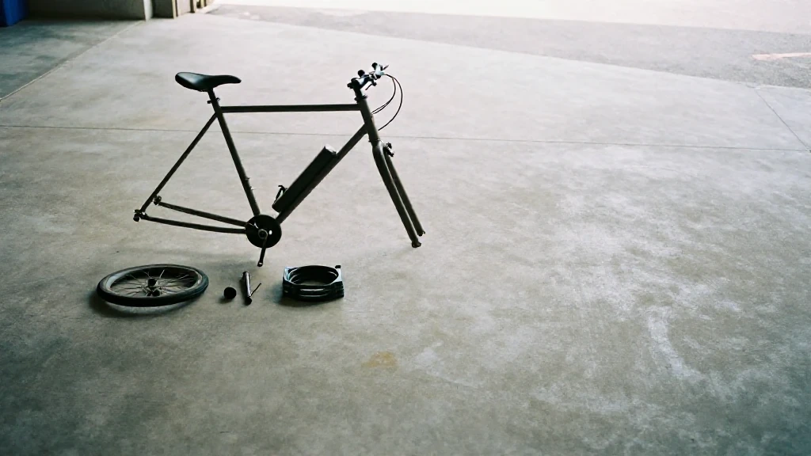
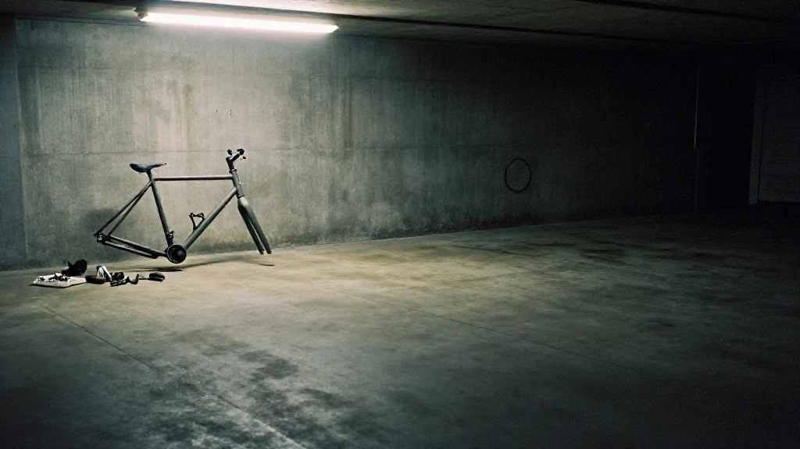
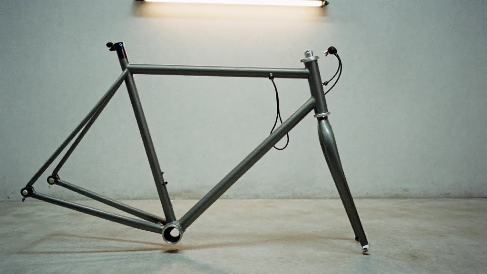
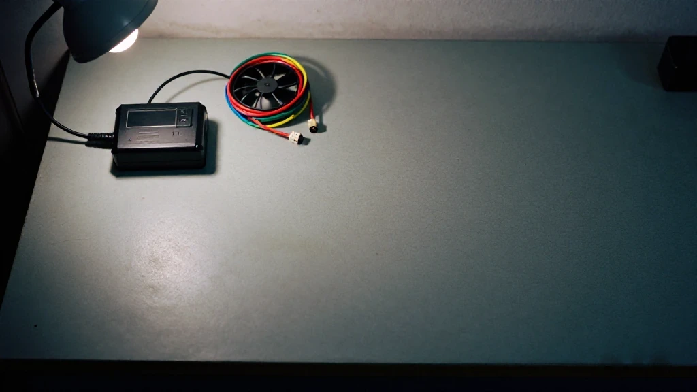
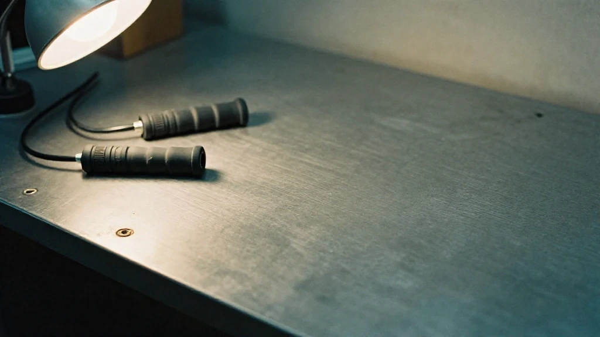
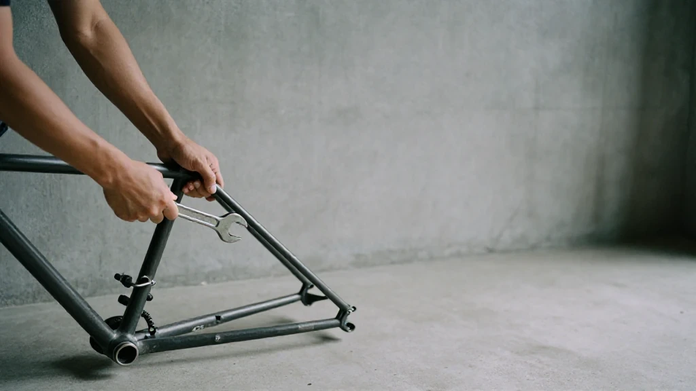
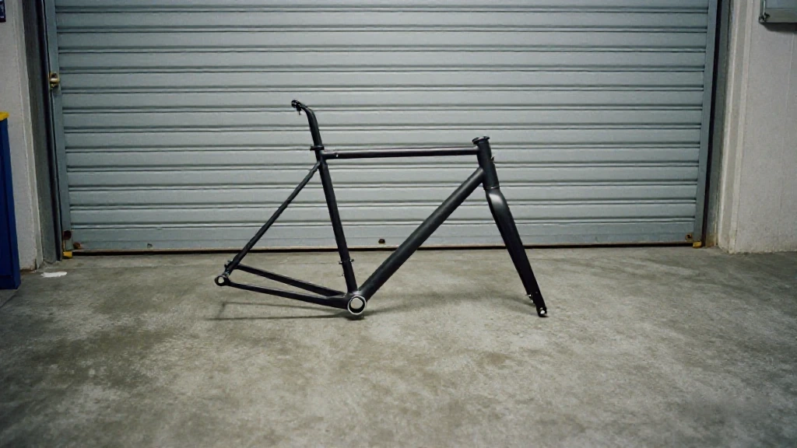
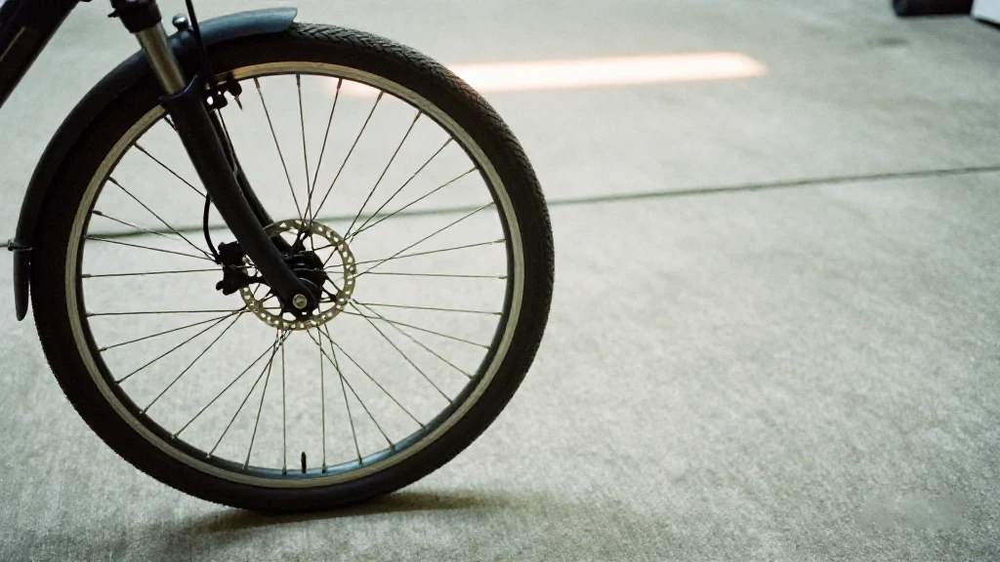

圖片由 AI輔助創作（Z-Image-Turbo）Image by AI (Z-Image-Turbo)
【鄭哥點評】
前幾日突發奇想：索性收個電動車車架，自己一步步組裝翻新。
220蚊收低，拆到光秃秃

圖片由 AI輔助創作（Z-Image-Turbo）Image by AI (Z-Image-Turbo)
以前整單車維修多多少少都識，但電動車改裝從來冇深入碰過。見網上有人出一套仲正常行駛嘅車架，開價三百幾，我直接還價200，對方應價仲包送貨。連同租電池陪對方還完，確認車況正常，最終220蚊低價收低，擺喺樓下。
閒落來就開始慢慢翻新。拆外賣箱、拆多餘配件，一步步拆到車架光秃秃。地下停車場又熱又多蚊，蹲低拆車成頭大汗，做到心煩氣躁。後來學聰明，唔逼自己一日搞掂：分階段慢慢弄，拆兩日、清洗乾淨，趁屋企冇人，直接電梯搬返屋企。閒時整兩下、得閒調兩下，慢慢打磨。
初衷好簡單：淨係想整到佢跑得郁就得

圖片由 AI輔助創作（Z-Image-Turbo）Image by AI (Z-Image-Turbo)
一諗60V30A新電池動輒六七百，只為試車效果根本唔抵。我手頭本來有48V電池，就諗住改控制器、通用舊電池慳成本。
附近師傅20蚊出個控制器，我凌晨一兩點專程開車三公里去取貨。當時以為幾條線對接就搞掂，點知裝好接電，車紋絲不動。
真正嘅磨練先至開始

圖片由 AI輔助創作（Z-Image-Turbo）Image by AI (Z-Image-Turbo)
懷疑控制器壞，退錢再換；網上再買新控制器，裝上依然唔得；睇教程、問人、對線序，反覆排查；前後換幾個控制器，依舊報故障、報轉把異常。
一路排查，所有人都話係轉把問題，我先恍然大悟——一直忽略最關鍵嘅細節。即刻落單新轉把，快遞未送，我親自去自取，飯都冇食就趕緊回來更換。
一插、一著，車終於動了。
學到嘅一套思維

圖片由 AI輔助創作（Z-Image-Turbo）Image by AI (Z-Image-Turbo)
呢件事睇落係220蚊撿平貨、少少學費換零件，實際學識嘅，係一套從零排查、邏輯解決問題嘅思維：電源供電、控制器參數匹配、轉把信號、剎車斷電、相線、霍爾線束，每一步都要有序排查，絕對唔可以靠猜、靠感覺。
以前換條外胎被收160，網上先三十幾，工序極簡單。呢個世界最大嘅差距，從來唔係手工，係信息差同認知差。
學識從來唔係為咗搶人飯碗，而係畀自己多一個選擇：俾人地做，我心甘情願；自己動手做，我心裡有數、有底氣。
做事方法

圖片由 AI輔助創作（Z-Image-Turbo）Image by AI (Z-Image-Turbo)
世間萬事都係同一個道理：唔好人云亦云，人點講你就點信。自己親手拆解、親眼驗證、親身弄懂，先至屬於自己嘅本事。
做事切忌心急亂來、一次性胡亂操作，分步拆解、逐點排查，先可以解決根本問題。
安全底線

圖片由 AI輔助創作（Z-Image-Turbo）Image by AI (Z-Image-Turbo)
講清楚一句：我呢副車係用嚟研究同練習，唔會當交通工具，唔會上路——道路、行人路、公共地方都唔會。香港呢類電動車基本上唔准喺道路同行人路用，改得幾靚都一樣；唔同地方規矩唔同，我唔會當自己嗰度得。技術上呢副車照樣要做得正：48V/60V 匹配、控制器參數對得上、線束穩固、制動可靠、電池固定到位、唔會短路——唔可以只求「跑得郁」，更要保證「剎得住、行得穩」。呢啲係為咗擺喺度都企得正、拆開都安全，唔係為咗出街。
一句到尾

圖片由 AI輔助創作（Z-Image-Turbo）Image by AI (Z-Image-Turbo)
車架先220蚊，中間交嘅學費、熬嘅夜晚、磨嘅耐心，最終換來四個字：心裡有數。呢份通透，真係太值。
圖片由 AI輔助創作（Z-Image-Turbo）Image by AI (Z-Image-Turbo)
[Zheng Ge's Take]
The idea came out of nowhere: buy an e-bike frame and rebuild it myself, one step at a time.
Two hundred and twenty, and stripped to the bone
圖片由 AI輔助創作（Z-Image-Turbo）Image by AI (Z-Image-Turbo)
I have been fixing bicycles for years, so I know my way round one well enough. An electric bike I had never once taken apart. Then I saw someone selling a complete frame that still ran, asking a bit over three hundred. I offered two hundred. He said yes, and threw in delivery. We rented a battery to go with it and I went along with him to hand it back, just to be sure the thing actually ran; in the end I took it for 220, which is cheap, and left it downstairs.
Whenever there was a spare hour I went at it. Off came the delivery box. Off came every part that did not need to be there, until the frame was bare. The underground car park was hot and thick with mosquitoes; crouched over the thing I was soaked in sweat and out of patience. Then I got a bit smarter: I stopped trying to finish in a day. Strip it over two days, wash it down properly, and then, while nobody was home, straight into the lift and up to the flat. Ten minutes when I had ten minutes. Half an hour when I had half an hour. Slowly, slowly.
The plan was simple: just get it moving
圖片由 AI輔助創作（Z-Image-Turbo）Image by AI (Z-Image-Turbo)
A new 60V30A battery is six or seven hundred at the very least, and that is silly money for the sake of finding out whether a frame works. I already had a 48V battery at home. So the plan was to change the controller and run the old battery — take the cheap road round.
A repairman near me was letting a controller go for 20. I drove three kilometres at one or two in the morning to collect it. At the time I assumed it would be a few wires and done. I bolted it on, connected the power, and the bike did not move a millimetre.
Then the real work started
圖片由 AI輔助創作（Z-Image-Turbo）Image by AI (Z-Image-Turbo)
I decided the controller was dead, took it back and swapped it. Bought another one online, fitted it, still nothing. Read the tutorials, asked around, checked the wire order, went round the loop again. Several controllers later it was still throwing a fault, still reporting a throttle error.
Everyone I asked said the same thing: it is the throttle. And then it landed — the one detail I had been walking straight past the whole time. I ordered a new throttle on the spot. The courier had not reached me, so I went to collect it myself, came back without eating, and fitted it.
One plug. One turn of the key. The bike moved.
What I actually learned
圖片由 AI輔助創作（Z-Image-Turbo）Image by AI (Z-Image-Turbo)
On the surface this was a 220-dollar bargain and a small tuition fee paid in parts. What I actually learned was a way of working a problem from zero: the power supply, the controller parameters matching, the throttle signal, the brake cut-off, the phase wires, the hall-sensor loom. Each one in its order. Never by guess, never by feel.
Years ago I was charged 160 to have a tyre changed. The same tyre is thirty-odd online, and the job is about as simple as a job gets. The biggest gap in this world is not labour. It is information, and what a person understands.
Learning a thing was never about taking the work out of somebody else's hands. It is about giving yourself a choice: if I pay someone to do it, I pay gladly; if I do it myself, I know the score and I stand on my own feet.
How I go about a thing
圖片由 AI輔助創作（Z-Image-Turbo）Image by AI (Z-Image-Turbo)
Everything in this world runs on the same rule. Do not take a thing on hearsay. Do not believe it because everyone says it. Take it apart with your own hands, check it with your own eyes, understand it with your own head — only then is it yours.
And never in a rush, never the whole thing at once. Break it into steps, work through them one at a time. That is the only way down to the root of a problem.
Where the line is
圖片由 AI輔助創作（Z-Image-Turbo）Image by AI (Z-Image-Turbo)
Let me be plain about one thing: this frame of mine is for study and for practice. It is not a vehicle. It does not go on the road — not the road, not the pavement, not any public place. In Hong Kong machines like this are generally not allowed on roads or pavements however well they are built, and the position differs from place to place; I am not going to assume it falls my way where I live. The build still has to be right, and it still has to be safe: 48V/60V matched, controller parameters that agree with each other, a loom properly secured, brakes that actually stop it, the battery fixed in place, no short circuits anywhere. "It runs" is not the standard. "It stops, it holds a line, nothing shorts, nothing burns" is. All of that is so the thing is sound standing still and safe to take apart — not so that it can go out.
One line to finish
圖片由 AI輔助創作（Z-Image-Turbo）Image by AI (Z-Image-Turbo)
The frame was 220. The tuition, the nights, the patience it cost — all of it came back as four words: knowing the score. That kind of clarity was worth every bit of it.